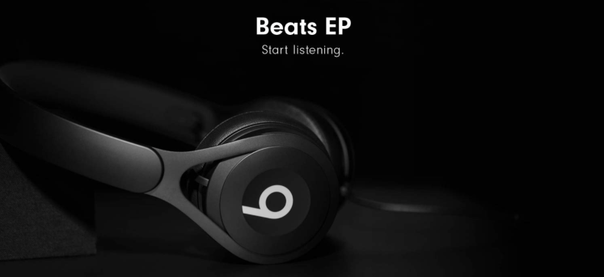

Beats EP
The preferred choice of a vast range of acclaimed DJs. Punchy, bass-focused sound and high isolation. Sturdy headband and on-ear cushions suitable for live performance
The preferred choice of a vast range of acclaimed DJs. Punchy, bass-focused sound and high isolation. Sturdy headband and on-ear cushions suitable for live performance
Brilliant Beats EP On- Ear Headphones Experience the premium sound with the Beats EP On Ear Headphone that incorporates best features such as fine-tuned acoustics, lightweight design, adjustable vertical sliders, remote talk cable, battery-free and much more.
Key Features
- On-Ear
- Ideal For: Entertainment | Travel
- Noise Isolation
- Wired
Exclusive Design This Beats EP On-Ear Headphone is well furnished with light weight design reinforced with stainless steel and turns to be much durable. It has the adjustable vertical sliders which ensure personalized fit and allows you to wear it without any discomfort.
Incredible Performance This Beats EP On-Ear Headphone is powered by fine-tuned acoustics to bring you greater sound quality for the complete audio experience. They turn to be ideal with incredible clarity and balance for any music lover. It is built with the battery free design which ensures you unlimited playback support.
About this item
- Beats EP on-ear headphone delivers masterfully tuned sound.
- Grab-and-goBeats EP is made to go everywhere you do
- Its battery-free design offers unlimited playback and hassle-free fixed cable lets you focus on the music.
The remote talk cable allows you to take calls and control your music easily. It is compatible with iOS devices. Additionally, this headphone can be stored securely with the included foldable carrying pouch
Conclusion Buy this Beats EP On-Ear Headphone soon and feel the beat on the go which results in a better audio listening experience.
How to configurate your headphones